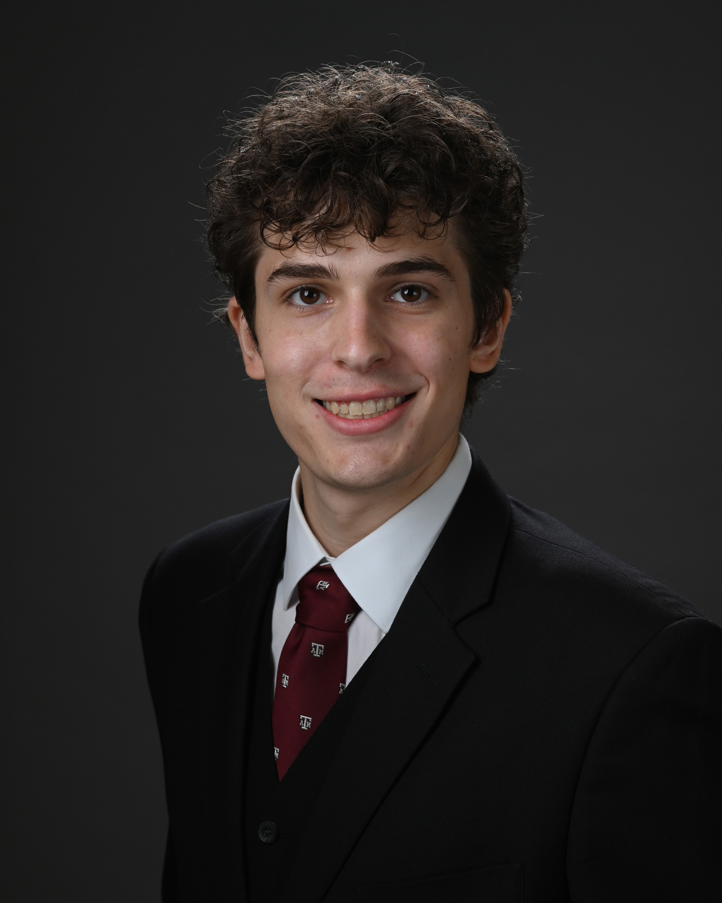

<table cellpadding="15px">
<tbody>
<tr>
<td>
<h3>Team 1 Homepage<br /><br />More Bio's<br /><br />Fall 2022</h3>
<hr />
<p><nav> <a href="index.html"> Home Page <a href="page2.html"> Page 2 </a> <a href="page3.html">Page 3 </a><nav></p>
<p>This page 3 of bio's for Team 1<br /><br />Howdy, my name is Jackson Cobb and I'm a class of '22 senior in Technology Management at TAMU. I'm in tech management because I love technology and IT, not to mention the business and management aspects the degree familiarizes you with. I hope that when I graduate to go off and work in whatever IT sector suits me the best, whether that be cyber, sysadmin, networking, anything really! Technology is always a force for change in our society, and I want to help facilitate good change through how I apply what I've learned. I've enjoyed my time here at A&amp;M and hope to come back here as this place continues to grow and change with the years.</p>
<p><br />Hi, I am Peter Chong, I am studying Technology Management at Texas A&amp;M. I am a member of the class of 23&rsquo; and I am from Plano, Texas. I wanted to be in Technology Management because Technology has been with me every day of my life and I would like to learn how to properly use them for profit and to help others. I would like to work at Microsoft or Samsung in the future as an IT and hope to change lives and make technology a tool to make human life easier.</p>
<p>.</p>
</td>
</tr>
</tbody>
</table>
